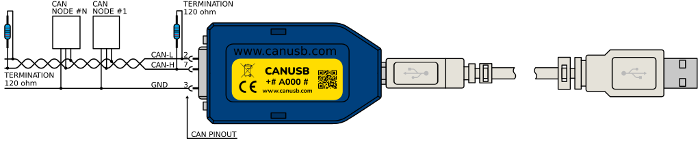

Installer l'application
Comment installer l'application sur le réseau NMEA 2000.
- Il faut simplement récupérer le répertoire "HUAHINE".
Il n'y a pas d'installation à faire.
Il faut exécuter le fichier "HUAHINE.exe" dans le répertoire "HUAHINE".
- Il faut, pour l'instant, installer le CANUSB.
Récupérez le driver "D2XX".
Exécutez le CDM2123620_Setup.exe, situé dans le fichier importé.
Je vous recommande de récupérer la dll "canusbdrv64.dll" situé sur ce téléchargement.
Car il y a un problème sur 'canusb_Status' sur la "canusbdrv64.dll" fournit avec le setup du CANUSB;
Donc, il faut copier le fichier "canusbdrv64.dll" dans le répertoire :Windows/system32.Avant de démarrer, branchez l'adaptateur, car il installe le driver USB, sinon vous aurez une erreur sur le "canusbdrv64.dll", qui sera introuvable.
- Il faut se raccorder sur le bus NMEA 2000.
Vous n'avez qu'à brancher les bornes CAN_H et CAN_L sur les pins 4 et 5 du NMEA2000.


Remarque : Si vous êtes branché à la place de la terminaison, il faut ajouter une resistance de 120 ohms.
- Maintenant, vous avez tout raccordé et mis vos drivers dans votre PC.
- Mettez en route votre réseau NMEA 2000.
- Utilisez l'application, HUAHINE.exe


Remarque : Je n'utilise pas les commandes en ASCII, mais avec les fonctions dll.
Exemple du programme pour utiliser les fonctions dll sur CANUSB
import ctypes
from ctypes import Structure, c_ubyte,c_long, c_int, POINTER, Array
from Package.constante import *
class CanData(Array):
_type_ = c_ubyte
_length_ = 8
class CanMsg(Structure):
_fields_ = (
("ID", c_long),
("TimeStamp", c_long),
("flags", c_ubyte),
("len", c_ubyte),
("data", CanData)
)
# Erreurs sur les fonctions de la dll.
class CanError(Exception):
pass
# ================================================== Classe Interface dll ==============================================
class CANDll:
def __init__(self, stop_flag):
self._etat = None
self._msg = None
self._stop_flag = stop_flag
# Charger la DLL
try:
self._dll = ctypes.WinDLL("canusbdrv64.dll")
except (OSError, FileNotFoundError) as err:
print("Erreur DLL:", err)
raise CanError
# =============== DEFINITION DES FONCTIONS INTERFACE DLL ======================
#
# Fonction OPEN
self._dll.canusb_Open.restype = c_long # Type de retour : entier long
# Fonction CLOSE
self._dll.canusb_Close.argtypes = [c_long]
# Fonction READ
self._dll.canusb_Read.argtypes = [c_long, POINTER(CanMsg)]
self._dll.canusb_Read.restype = c_int
# Fonction STATUS
self._dll.canusb_Status.restype = c_int
# Fonction FLUSH
self._dll.canusb_Flush.restype = c_int
self._dll.canusb_Flush.argtypes = [c_long,c_long]
# Il y en a d'autres, mais pour l'instant ne sont pas utiles
self._handle = None
# Méthode d'ouverture de l'adaptateur. Cette fonction est appelé par le bouton "OPEN".------------------------------
def open(self, bitrate, acceptance_code, acceptance_mask, flags):
# Ouvre l'adapateur et retourne son instance.
self._handle = self._dll.canusb_Open(None, bitrate, acceptance_code, acceptance_mask, flags)
if self._handle is None:
raise CanError("Erreur ouverture canal CAN")
else:
return self._handle # Retourne le handle dont on a besoin pour savoir si c'est ouvert
# Méthode de lecture des trames du bus CAN en synchrone.-------------------------------------------------------------
def read_dll(self, stop_flag, main_window) -> CanMsg: # Retourne un pointeur sur le CanMsg
if self._handle is None:
raise CanError("Channel not open")
self._msg = CanMsg() # Défini le format
# Boucle pour attendre les trames CAN.
while not stop_flag:
if self._handle is None:
self._handle = 0 # Marquer le handle en entier comme inactif
if stop_flag:
return self._msg
result = self._dll.canusb_Read( self._handle,ctypes.byref(self._msg))
# Résultat du CAN : on sort si une trame a été reçue : result == 1.
# Sinon il a des valeurs négatives qui représente différent défaut,
# dont le -7 qui indtque qu'il n'a pas reçu de trames.
if result <= -2 and result != -7:
# On ne traite pas les défauts, mais on le signale.
print("Défaut CAN : ", str(result))
# Affiche la fenêtre Status
main_window.on_click_status()
if result == 1: # C'est qu'on a reçu un msg.
break
# Une fois une trame reçue, on la retourne
return self._msg # Retourne le CanMsg dont on aura besoin pour l'enregistrer
# Méthode de fermeture de l'adaptateur. ----------------------------------------------------------------------------
def close(self):
if self._handle is not None:
self._dll.canusb_Flush(self._handle, FLUSH_WAIT)
self._dll.canusb_Close(self._handle)
self._handle = None
# Méthode de lecture du status de l'adaptateur. --------------------------------------------------------------------
def status(self):
self._etat = self._dll.canusb_Status(self._handle)
return self._etat
# ==================================== FIN DE LA CLASSE CANDll ========================================================